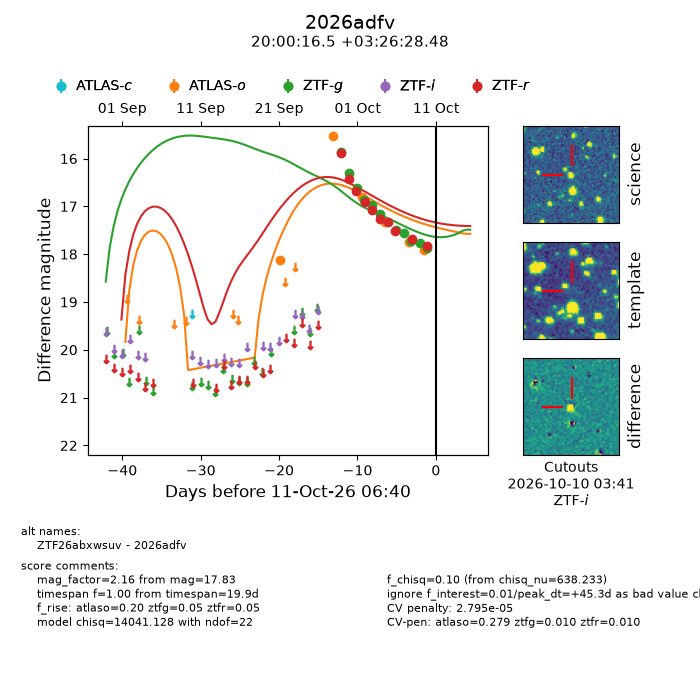
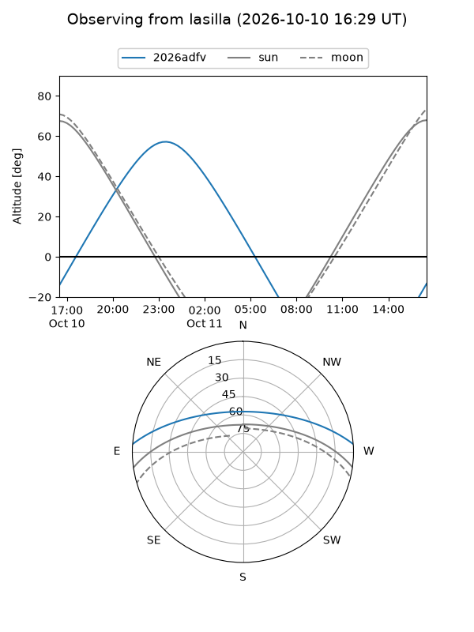
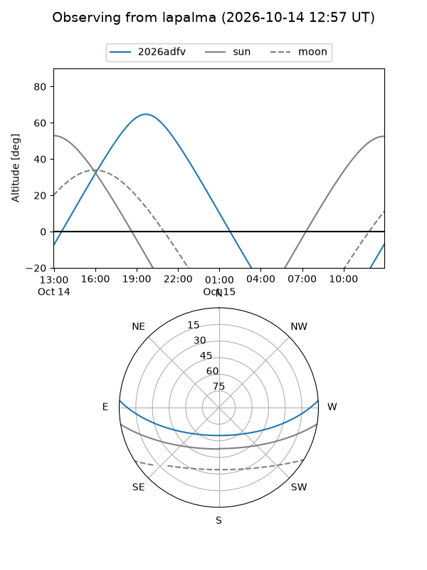
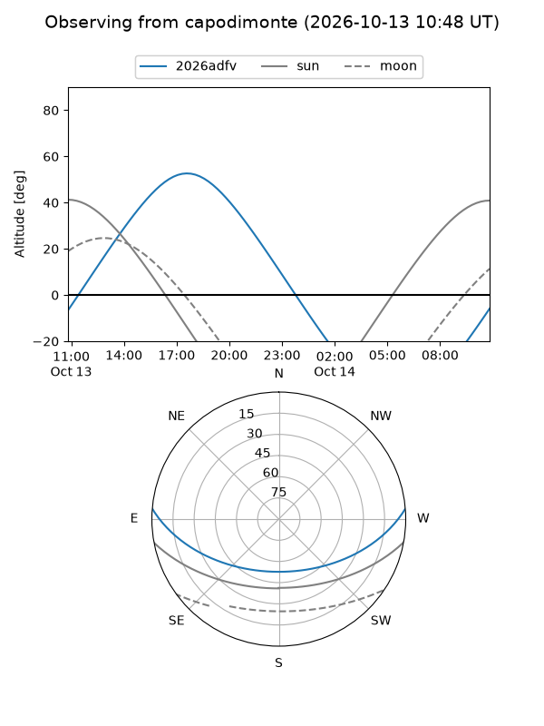
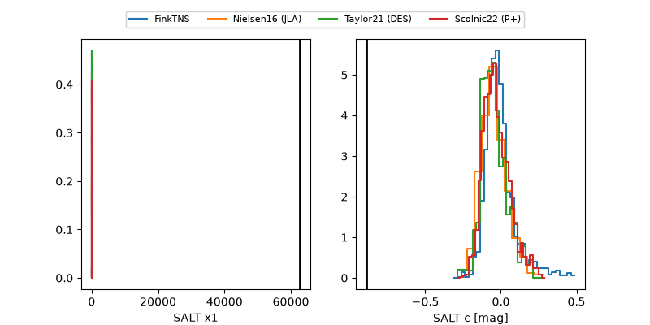

2026adfv
Target 2026adfv at 2026-10-23 11:54
Aliases and brokers:
FINK-ZTF: ztf.fink-portal.org/ZTF26abxwsuv
Lasair-ZTF: lasair-ztf.lsst.ac.uk/objects/ZTF26abxwsuv
ALeRCE-ZTF: alerce.online/object/ZTF26abxwsuv
YSE-PZ: ziggy.ucolick.org/yse/transient_detail/2026adfv
TNS name: wis-tns.org/object/2026adfv
Direct TNS query: direct search
alt names
ZTF26abxwsuv (ztf,fink_ztf)
2026adfv (tns,yse)
Coordinates:
equatorial (ra, dec) = 300.0689,+3.44126
equatorial (HMS+DMS) = 20:00:16.53,+03:26:28.52
galactic (l, b) = (44.0908,-13.61938)
Flags:
peak dt: +27.7
likely cv: !!
CV pen: 0.0001
Photometry:
last ztfg=18.21, ztfr=18.34
16 ztfg, 16 ztfr detections
Lightcurve

Visibility



Additional plots
